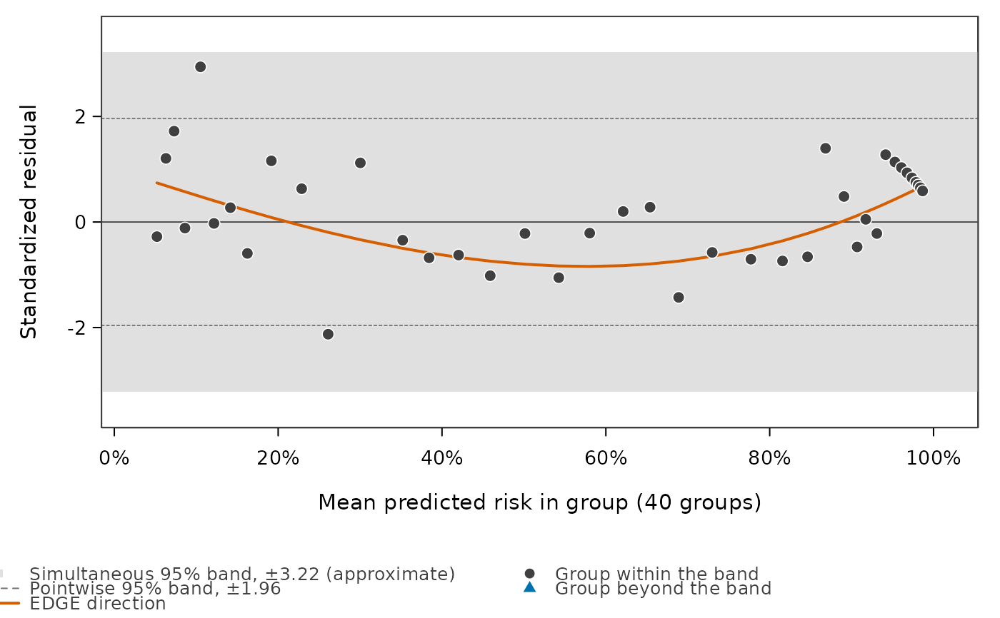
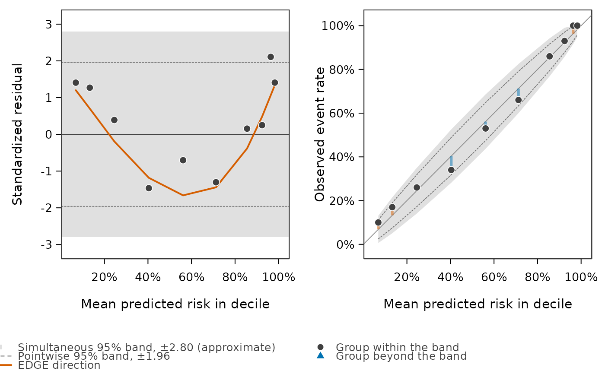
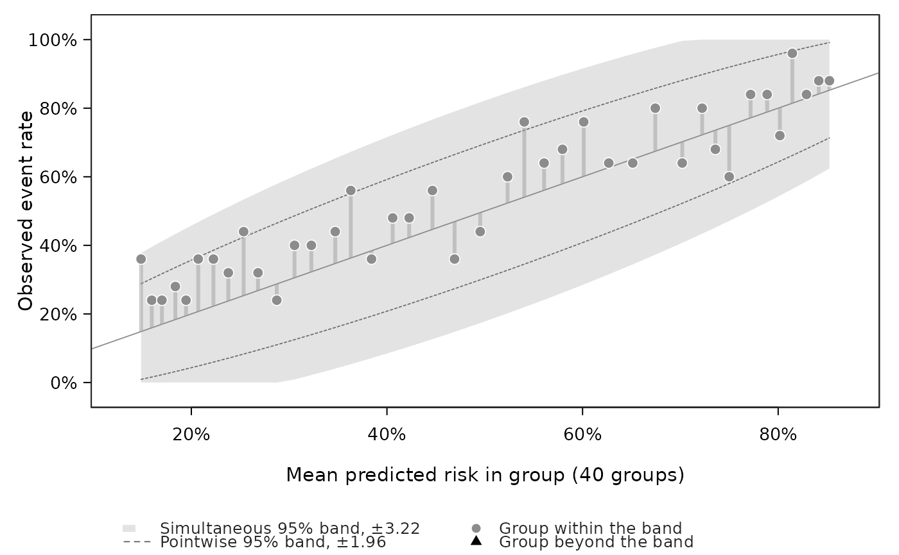

Plot an EDGE result: the grouped residuals, the shape tested and the bands
Source:R/edge_gof.R
plot.edge_gof.RdDraws one row of an edge.gof result: the standardized residual of each risk
group against its mean predicted risk, the part of the residuals that the test squared
(\(P_Z r\), the EDGE direction) as a curve, a pointwise band and a simultaneous band.
Groups beyond the band are drawn as filled triangles.
Arguments
- x
An
"edge_gof"object fromedge.gof.- row
Which row to draw:
"verdict"(default),"check", or a row number.- scale
"residual"(default),"rate", orc("residual", "rate")for both panels side by side.- band
"simultaneous"(default; the pointwise band is then drawn dashed),"pointwise"or"none". Groups beyond the chosen band are marked.- colour
FALSEdraws in greys only.- level
Coverage of the bands. Default
0.95.- ...
Not used.
Details
For group \(g\) with \(O_g\) events, \(E_g = \sum \hat p_i\) and \(V_g = \sum \hat p_i(1 - \hat p_i)\), the residual is \(r_g = (O_g - E_g)/\sqrt{V_g}\).
Frozen predictions (external = TRUE). Nothing was estimated from these
outcomes, so the residuals are independent with unit variance under a calibrated model and
the bands are the ones of the EDGE paper: pointwise at \(\pm z_{1-(1-\mathrm{level})/2}\)
and simultaneous at \(\pm z_{1-(1-\mathrm{level}^{1/G})/2}\), the Sidak form of the
Bonferroni band, which has exact coverage level for \(G\) independent normal
residuals.
In-sample (a fitted glm, or X given). The fit removes part of every
residual, so \(r\) has covariance \(\Omega = I - U(X'WX)^{-1}U'\), not \(I\). Each
residual and the curve are divided by \(\sqrt{\Omega_{gg}}\) before the same constants
are applied. The pointwise band is then right to first order, and the simultaneous band is
conservative for correlated normal residuals (Sidak's inequality). Both rest on the normal
approximation and on an estimated \(\Omega\), so the legend calls them approximate. When
only y and predicted_probs were given, without X, \(\Omega = I\) is
used and the bands are conservative.
The rate scale. scale = "rate" shows the observed event rate \(O_g/n_g\)
against the predicted rate \(E_g/n_g\) with the same band around the diagonal, half-width
times \(\sqrt{V_g \Omega_{gg}}/n_g\), cut at 0 and 1. The bars join each group to the
diagonal: vermilion when more events were seen than predicted, blue when fewer.
The band is a description of where the misfit lies. The verdict is the p-value of the row, which does not depend on the band.
Examples
set.seed(1)
n <- 1000
x <- runif(n, -3, 3)
y <- rbinom(n, 1, 1 - exp(-exp(0.8 * x))) # log-log truth, fitted as logit
fit <- glm(y ~ x, family = binomial())
e <- edge.gof(fit)
plot(e)

plot(e, row = "check", scale = c("residual", "rate"))

## frozen predictions: the bands are exact
xv <- runif(n, -3, 3)
yv <- rbinom(n, 1, plogis(0.3 + 0.6 * xv))
pv <- plogis(0.6 * xv) # the model misses the intercept shift
plot(edge.gof(yv, predicted_probs = pv, external = TRUE), scale = "rate", colour = FALSE)
